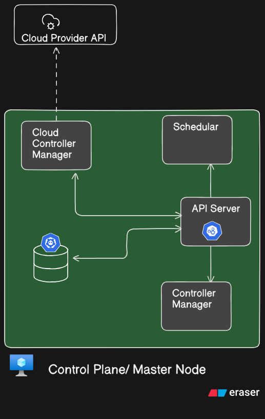
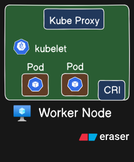
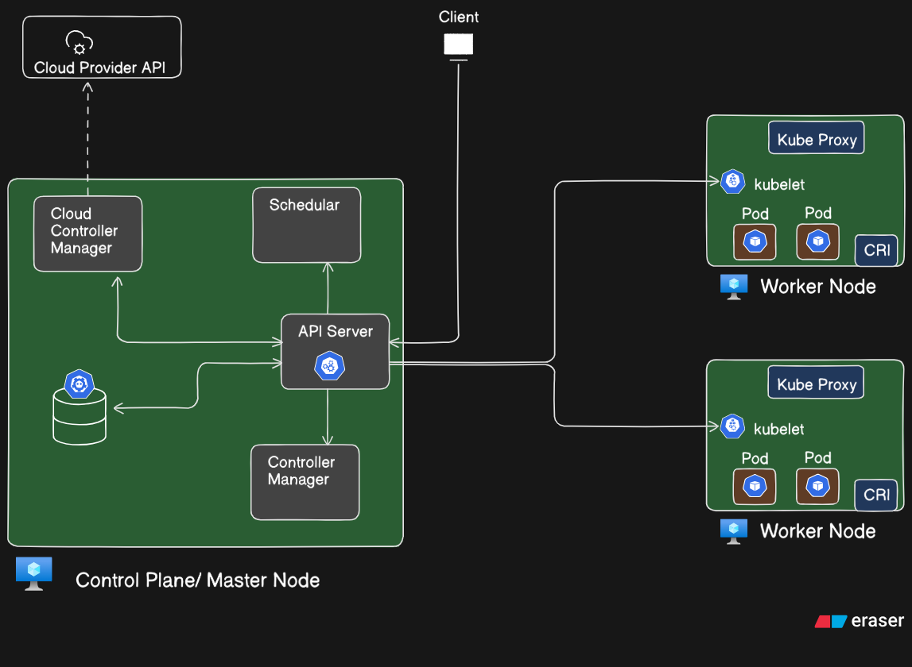

Kubernetes Architecture: Introduction¶
Before we dive into how Kubernetes works under the hood, it's essential to understand the architecture that powers it. Kubernetes is a distributed system built to manage containerized applications at scale, and it achieves this through a robust and modular architecture.
At its core, the Kubernetes architecture is divided into two major parts:
- Control Plane (Master Node) – This is the brain of the cluster. It makes global decisions, handles orchestration logic, and ensures that the desired state of the system is always maintained.
- Worker Nodes – These are the machines (virtual or physical) where your applications actually run inside containers, grouped as Pods.
Each of these components is responsible for a distinct part of the orchestration process—from accepting user commands to scheduling Pods and managing their lifecycle across nodes.
In this chapter, we will break down: - The individual components of the Control Plane and Worker Nodes - Their responsibilities - How they interact with one another - The complete lifecycle of a request, from creation to execution
By the end of this chapter, you will have a strong conceptual foundation of how Kubernetes orchestrates your application infrastructure efficiently and reliably.
The Control Plane / Master Node in Kubernetes¶

In a Kubernetes cluster, there are two broad categories of components:
- Control Plane (Master Node): Responsible for managing the cluster state and orchestration decisions
- Worker Nodes: Responsible for running actual workloads (Pods)
Let's begin with the Control Plane.
Overview of the Control Plane¶
The Control Plane is like the brain of Kubernetes. It is responsible for the global decisions of the cluster — like scheduling, scaling, and responding to cluster events — and for exposing the Kubernetes API to users and internal components.
Here are the key components inside the Control Plane:
API Server¶
- Acts as the front door or gateway to the Kubernetes cluster.
- It is the only component in the Control Plane that interacts with every other component.
- Every
kubectlcommand you run (e.g.,kubectl get pods) hits the API Server, which then fetches the relevant data from the underlying store or routes it to the appropriate internal component.
Think of it as the HTTP REST server for Kubernetes.
- It exposes a RESTful API and communicates using JSON over HTTP(S).
- All other components (Scheduler, Controller Manager, kubelet, etc.) talk to the API Server.
- API requests (like creating a Pod, fetching logs, updating configuration) are all logged and validated here.
Scheduler¶
- Officially called
kube-scheduler - It is responsible for assigning newly created Pods to nodes (i.e., scheduling them).
How it works:¶
- Watches for Pods that are waiting for scheduling
- Looks at the requirements of the Pod (CPU, memory, affinity rules, etc.)
- Evaluates which node can accommodate the Pod based on constraints
- Selects the most appropriate node and binds the Pod to it
Note: It does not run the Pod — it only decides where it should run.
Controller Manager¶
This is a daemon that runs multiple controllers in a single process. Each controller is a loop that watches the desired state of some part of the cluster and tries to make the actual state match it.
Common types of controllers:
- Deployment Controller – Ensures that the desired number of Pods are always running for a Deployment.
- ReplicaSet Controller – Manages the replicas of a Pod.
- Namespace Controller – Watches for namespace creation/deletion.
- Node Controller – Watches node availability (e.g., marks nodes as "NotReady" if they stop responding).
Think of controllers as autopilots — constantly reconciling reality with the desired state.
etcd¶
- A key-value store and the source of truth for the cluster
- Stores all configuration data, cluster state, and metadata
- Highly consistent and reliable
- Used by API Server to read/write the cluster state
Example:¶
When you run:
kubectl get pods
- The request goes to the API Server
- API Server fetches the list of pods from etcd
- API Server returns the data to your terminal
Similarly, if you create a Pod, the API Server:
- Validates the request
- Stores the definition in
etcd - Passes it to the Scheduler and Controller Manager
Cloud Controller Manager¶
This component exists only if you're using Kubernetes on a public cloud (like GKE, EKS, or AKS). It abstracts the cloud-specific logic out of the main Kubernetes components.
It is responsible for:¶
- Communicating with the cloud provider's APIs
- Managing resources like:
- Load balancers
- Volumes
- Nodes (via auto-scaling groups)
- IP addresses
How it works:¶
- API Server receives a request (e.g., to create a LoadBalancer service)
- It forwards the request to Cloud Controller Manager
- The Cloud Controller Manager then interacts with the Cloud Provider API
- After provisioning, it writes the state back into
etcd
Internal Communication Flow¶
All communication between these components flows through the API Server.
- The Scheduler doesn't talk directly to
etcd - The Controller Manager doesn't talk directly to the Scheduler
- Even the Cloud Controller Manager interacts via the API Server
This centralization ensures:
- All operations go through access control, authentication, and audit logging
- Consistency and synchronization via a single source of truth
Summary¶
| Component | Role |
|---|---|
| API Server | Central control hub and RESTful interface to the cluster |
| Scheduler | Assigns Pods to Nodes |
| Controller Manager | Runs various reconciliation loops to maintain cluster state |
| etcd | Stores all data and state of the cluster |
| Cloud Controller Manager | Cloud-specific integration layer for managed Kubernetes |
Worker Node in Kubernetes¶

A Worker Node is a machine (virtual or physical) that hosts the containers for running your application workloads.
While the Control Plane makes the decisions, Worker Nodes execute those decisions.
Each Worker Node contains a few critical components to function effectively in the Kubernetes cluster.
Components of a Worker Node¶
kubelet¶
kubeletis an agent that runs on every node in the cluster.- It is the bridge between the API Server (control plane) and the containers running on the node.
Responsibilities:¶
- Registers the node with the Kubernetes API Server.
- Watches for Pod specifications from the API Server.
- Ensures that the specified containers are running and healthy.
- Reports back to the API Server with the status of the node and Pods.
If a Pod crashes or stops, kubelet will try to restart it based on the defined policy (e.g.,
Always,OnFailure).
However, kubelet does not manage containers directly — it delegates that responsibility to a container runtime.
Container Runtime Interface (CRI)¶
The Container Runtime is the software responsible for:
- Pulling container images
- Starting and stopping containers
- Managing container lifecycle
Examples of container runtimes:
- Docker (deprecated in newer Kubernetes versions)
- containerd
- CRI-O
Kubelet uses the Container Runtime Interface (CRI) to communicate with the container runtime underneath.
The container runtime is what actually launches and manages the containers on the system.
Pods¶
- Pods are the smallest unit of deployment in Kubernetes and represent one or more containers.
- The Scheduler in the Control Plane assigns Pods to this node.
- Once a Pod is assigned, kubelet ensures the Pod runs on the node using the container runtime.
Each Pod on a worker node:
- Gets a unique IP
- Shares networking and storage if multiple containers are inside
Kube Proxy¶
kube-proxyis the networking component on each node.- It maintains the network rules for Pod-to-Pod communication and Service IP routing.
Key Roles:¶
- Implements iptables or IPVS rules to direct traffic to the right Pod
- Handles load balancing for traffic directed to Services
- Ensures network accessibility between services and across nodes
Think of kube-proxy as the internal DNS traffic cop that routes requests efficiently across the cluster.
How It All Works Together¶
Let's tie this into a real flow:
- You create a Pod using:
kubectl apply -f pod.yaml - API Server logs the request, validates it, and saves it in etcd.
- The Scheduler picks an appropriate Worker Node and binds the Pod to it.
- On the assigned node:
kubeletsees the new Pod specification- It uses the Container Runtime (CRI) to pull the image and run the container
- The container(s) are launched inside a Pod
kube-proxyensures that networking rules are updated for communication
Summary of Worker Node Components¶
| Component | Role |
|---|---|
| kubelet | Connects node to API Server, ensures Pod containers are running |
| CRI | Container engine (e.g., containerd, CRI-O) that actually runs containers |
| Pods | Encapsulate application containers |
| kube-proxy | Maintains networking and service routing rules |
Summary Table: Control Plane vs Worker Node¶
| Control Plane | Worker Node |
|---|---|
| API Server, Scheduler, Controllers | kubelet, kube-proxy, CRI, Pods |
| Global decision-making | Execution of workloads |
| Stores state in etcd | Runs containerized applications |
| Does not run application containers | Responsible for container lifecycle |
Complete Kubernetes Architecture¶

Now that we've explored each component of Kubernetes in isolation, let's bring everything together and walk through the complete flow of a Kubernetes request from start to finish.
This full diagram represents the Kubernetes architecture in action, with a Control Plane managing multiple Worker Nodes.
Step-by-Step Request Lifecycle¶
Client Sends a Request¶
A developer or administrator uses kubectl to interact with the cluster:
kubectl apply -f my-app.yaml
This request is sent to the API Server, the main entry point of the cluster.
API Server Receives and Validates the Request¶
The API Server:
- Authenticates and authorizes the request
- Validates the manifest
- Stores the desired state in etcd, the key-value store used by Kubernetes
Scheduler Assigns the Pod¶
The Scheduler:
- Watches for unscheduled Pods
- Selects the most suitable Worker Node
- Binds the Pod to that node (through the API Server)
Controller Manager Ensures Desired State¶
The Controller Manager:
- Monitors the actual state of the system
- Compares it with the desired state (as defined in etcd)
- Initiates actions to reconcile differences, such as creating or restarting Pods
Cloud Controller Manager (for Managed Cloud)¶
If you're using a managed Kubernetes service (EKS, AKS, GKE):
- The Cloud Controller Manager interacts with cloud provider APIs
- It provisions cloud-specific resources (e.g., LoadBalancers, Volumes)
- These changes are also recorded in etcd
Kubelet on the Worker Node Acts¶
On the selected Worker Node:
- The kubelet receives instructions from the API Server
- It invokes the Container Runtime Interface (CRI) (e.g., containerd, CRI-O) to:
- Pull the container image
- Launch the container(s) in a Pod
kube-proxy Manages Networking¶
The kube-proxy:
- Configures network routing rules (via iptables or IPVS)
- Enables communication between services and Pods
- Ensures traffic is correctly routed and load-balanced across Pods
Summary of Component Collaboration¶
| Component | Responsibility |
|---|---|
| API Server | Central API interface and request router |
| etcd | Persistent, consistent state store |
| Scheduler | Assigns Pods to nodes based on resource availability |
| Controller Manager | Reconciles desired and actual state of resources |
| Cloud Controller Manager | Manages cloud provider-specific resources |
| kubelet | Ensures container state on Worker Nodes |
| CRI | Pulls images and manages container lifecycle |
| kube-proxy | Manages Pod-to-Pod and Pod-to-Service networking |
Conclusion¶
This full system flow illustrates how Kubernetes combines the intelligence of the Control Plane with the execution power of Worker Nodes. Every request is processed, validated, stored, scheduled, and executed through a well-coordinated series of steps and components.
Understanding this architecture is crucial for mastering Kubernetes operations, optimizing performance, and troubleshooting complex workloads in production environments.